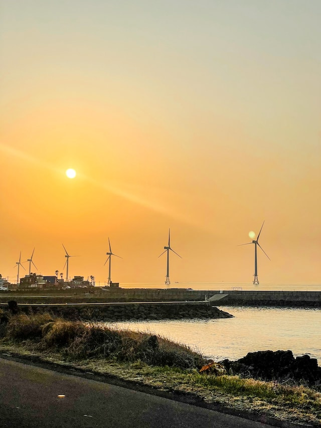
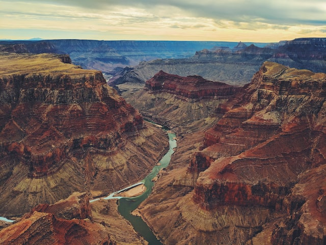
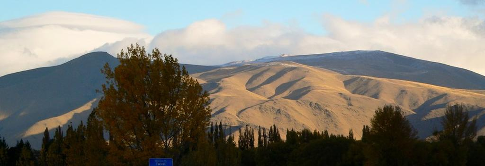
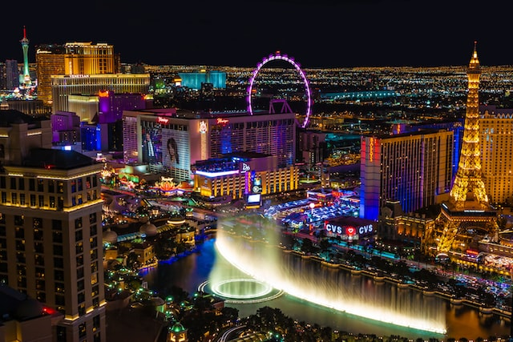

Little About Me
I was born in the states, but went back to South Korea after 2 years and lived there for about 18 years. As soon as I graduated high school, I came back to the states, Seattle, Washington. I took some college credits and did a lot of part time jobs, mostly cashier, server, and cook in the kitchen. Then, I wanted to change how I live so I join ed the army reserve a few years ago. Thanks to the army, I got some opportunities to study, and then here I am learning coding at Code Fellows.
Photo by Vladislav Klapin on Unsplash
My goal is to live normally just like the others, and be able to go to vacation at least once or twice a year.
Top 10 Places I would like to go!
- It is an island in South Korea.
- Ocean around this island, and mountains are beautiful. This is where I can calm down and relax.  Photo by oning on Unsplash
- One of the biggest canyon in the world.
- The view makes me overwhelmed.  Photo by Sonaal Bangera on Unsplash
- It/'s where the Lord of the Rings/' scenes were taken. It was Pelennor Fields in the movie.
- I am a huge fan of LotR and I want to visit every scene scene was taken. 
- One of the biggest gamble city.
- Every hotel on the street has casino on the first floor and I would like to visit there!  Photo by Julian Paefgen on Unsplash
- Hokkaido is in North of Japan.
- Hot springs are amazing and you will never know until you actually have experienced it.
- It is a small South Pacific island in French Polynesia.
- It is a famous for honeymoon. Localize on Unsplash
- It as also a scene location from the Lord of the Rings, in which Edoras was in the movie.
- I like the view where I can feel overwhelmed by just looking.
- It is an island in the Northern Mariana Islands.
- I love view of ocean!
- It is in Washington State!
- One of the biggest mountain in Washington state! I have been there but, I want to go back there agian! I can't forget how it was up there!
- It is a capital city in South Korea.
- You can literally see everything in here. Also, it is where I used to live, so I would like to go back and meet my friends!
Jeju-do
Grand Canyon
Mackenzie Country
Las Vegas
Hokkaido Hot Springs
Bora Bora Island
Canterbury